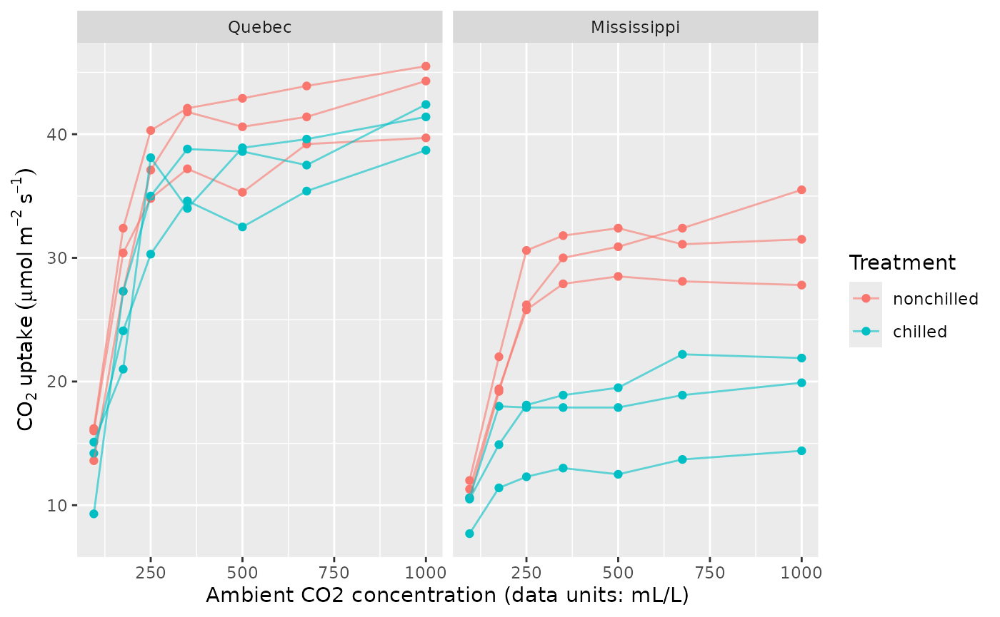
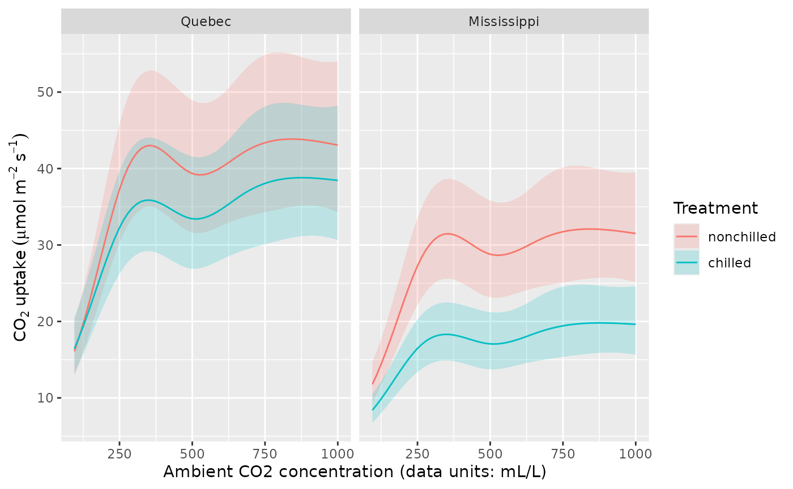
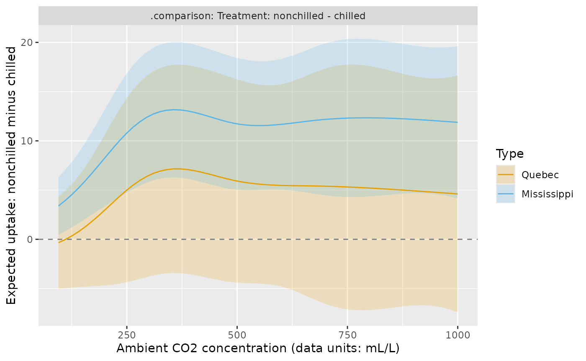
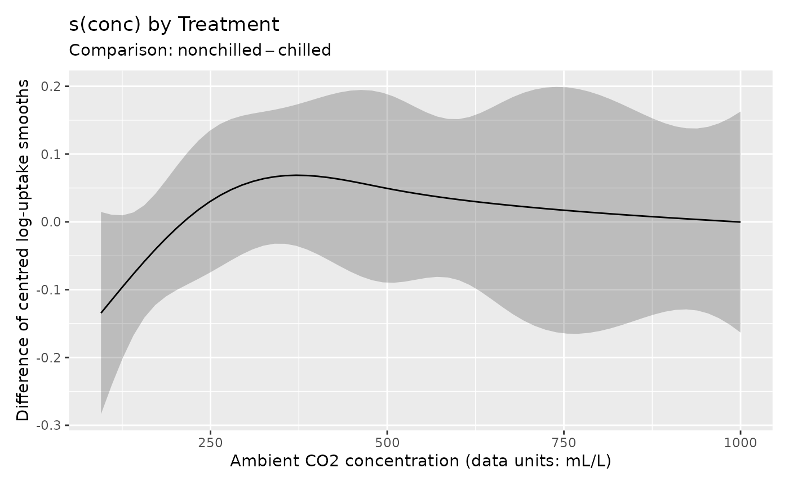
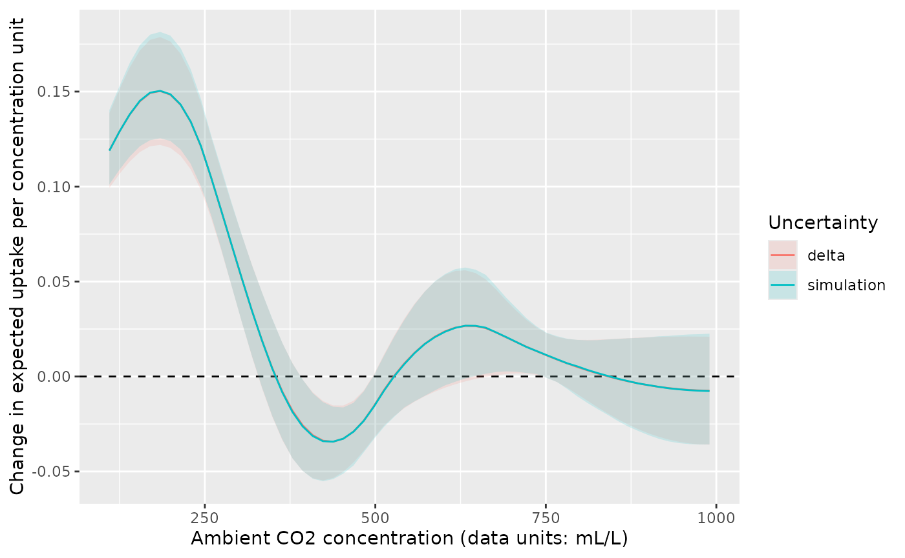
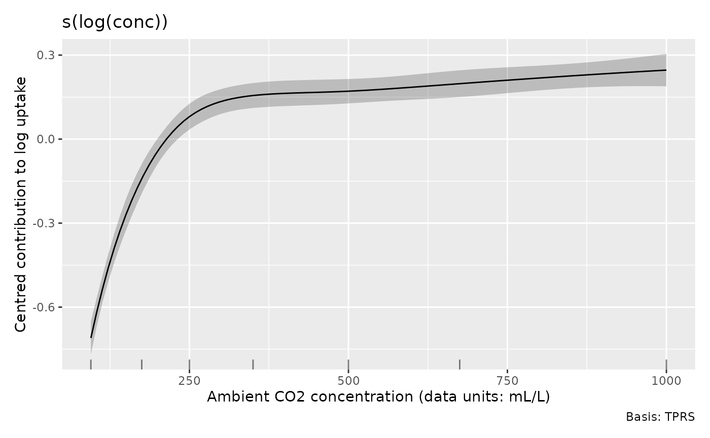
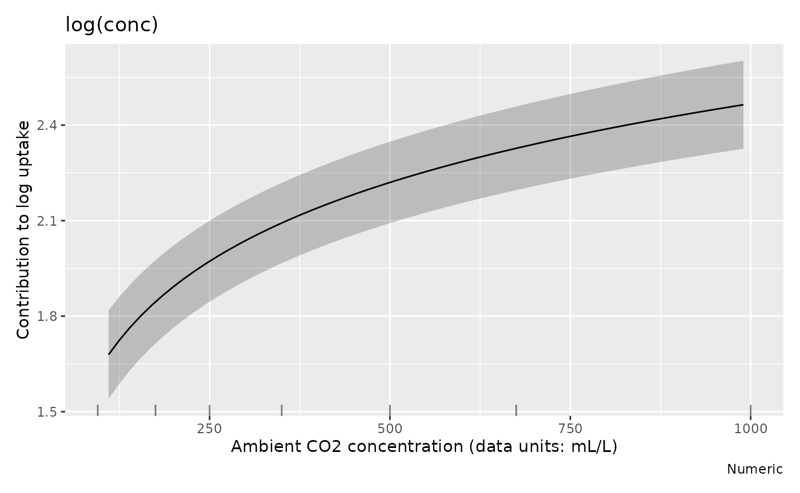

Comparing treatments and finding rates of change
Source:vignettes/articles/prediction-comparisons.Rmd
prediction-comparisons.RmdDoes chilling reduce carbon dioxide uptake, and does the answer depend on carbon dioxide concentration or plant origin? When does increasing concentration produce the largest increase in uptake? These questions require comparisons of fitted responses and their rates of change, rather than inspection of individual smooths alone. This article uses the same model to answer each question and to explain how the choice of interval changes the conclusion.
The examples use the small CO2 data set distributed with
R, plus mgcv, gratia, dplyr and ggplot2. No additional modelling package
is needed. We use 2,000 coefficient draws for the illustrated bands and
posterior calculations. If a conclusion depends on an interval limit,
increase this count and check that the limit is stable.
What was measured, and what model is useful?
The R
documentation for CO2 describes an experiment on cold tolerance in
Echinochloa crus-galli. Uptake was measured at seven
concentrations in each of twelve plants, with three plants in each
origin and treatment combination. Chilled plants were cooled overnight.
The response is uptake in micromoles per square metre per second;
conc records ambient concentration in the units supplied
with the data (mL/L). These repeated measurements describe curves for
individual plants.
plant <- as.data.frame(datasets::CO2)
plant$Plant <- factor(plant$Plant, ordered = FALSE)
uptake_label <- expression(CO[2]~uptake~(mu*mol~m^{-2}~s^{-1}))
concentration_label <- "Ambient CO2 concentration (data units: mL/L)"
ggplot(plant, aes(conc, uptake, colour = Treatment, group = Plant)) +
geom_point() +
geom_line(alpha = 0.6) +
facet_wrap(~ Type) +
labs(x = concentration_label, y = uptake_label, colour = "Treatment")
Uptake increases quickly at lower concentrations and then tends to level off. The chilled Mississippi plants have particularly low uptake. We fit a separate smooth concentration response for each treatment, and allow the treatment contrast in average log uptake to differ by origin. A plant random intercept allows measurements from the same plant to share a persistent deviation from the fitted curve.
All responses are positive. A Gamma distribution with a log link preserves positive fitted means and assumes that residual variability grows with the mean. The model assumes that the shape of each treatment curve on the log scale is shared between origins. The origin interaction changes its height. With three plants per combination, sharing those shapes lets us estimate treatment curves without fitting a separate shape to every origin and treatment combination.
m_uptake <- gam(
uptake ~ Type * Treatment + s(conc, by = Treatment, k = 5) +
s(Plant, bs = "re"),
data = plant, family = Gamma(link = "log"), method = "REML"
)
overview(m_uptake)
#>
#> Generalized Additive Model with 7 terms
#>
#> term type k edf ref.edf statistic p.value
#> <chr> <chr> <dbl> <dbl> <dbl> <dbl> <chr>
#> 1 Intercept parame… NA 1 1 54.7 < 0.001
#> 2 TypeMississippi parame… NA 1 1 -3.44 0.00102
#> 3 Treatmentchilled parame… NA 1 1 -1.25 0.21582
#> 4 TypeMississippi:Treatmentchilled parame… NA 1 1 -2.80 0.00668
#> 5 s(conc):Treatmentnonchilled TPRS 4 3.91 3.99 102. < 0.001
#> 6 s(conc):Treatmentchilled TPRS 4 3.88 3.99 69.9 < 0.001
#> 7 s(Plant) Random… 12 6.92 8 6.96 < 0.001k = 5 limits each treatment curve’s complexity; REML
estimates the penalties that control its smoothness. It does not force
five effective degrees of freedom. The plant intercept accounts for
persistent differences in curve height. Residual patterns against
concentration can show whether plant differences also involve curve
shape; the diagnostic workflow
explains checks with fitted effects and simulated effects. The treatment
comparison has three independent plants per combination, even though
each plant contributes seven measurements.
Compare expected uptake on a supported grid
For each origin and treatment, evaluate concentration across its
observed range. .by evaluates expressions within observed
groups. This matters when groups have different ranges: using the
overall range can extrapolate for some groups. Here the experimental
concentration range is the same in all four groups.
uptake_grid <- data_slice(m_uptake,
conc = evenly(conc, n = 60),
Plant = level(Plant, as.character(Plant[1])),
.by = c(Type, Treatment)
)
uptake_grid |>
group_by(Type, Treatment) |>
summarise(lower = min(conc), upper = max(conc), .groups = "drop")
#> # A tibble: 4 × 4
#> Type Treatment lower upper
#> <fct> <fct> <dbl> <dbl>
#> 1 Quebec nonchilled 95 1000
#> 2 Quebec chilled 95 1000
#> 3 Mississippi nonchilled 95 1000
#> 4 Mississippi chilled 95 1000The Plant expression supplies one actual plant
identifier in each group. We exclude its random effect below, so every
curve describes a plant whose random intercept is zero. With a log link,
this does not give the mean obtained by averaging over
the population distribution of random intercepts. It also excludes
measurement noise: the bands concern conditional expected uptake, not
future measurements.
uptake_fitted <- fitted_values(m_uptake,
data = uptake_grid, exclude = "s(Plant)",
interval = "simultaneous", n_sim = 2000, seed = 2026
)
ggplot(uptake_fitted, aes(conc, .fitted, colour = Treatment, fill = Treatment)) +
geom_ribbon(aes(ymin = .lower_ci, ymax = .upper_ci), alpha = 0.2,
colour = NA) +
geom_line() +
facet_wrap(~ Type) +
labs(x = concentration_label, y = uptake_label,
colour = "Treatment", fill = "Treatment")
The fitted Mississippi curves are lower, especially after chilling. For the Quebec plants the treatment curves are closer. Overlap between two prediction bands is not a direct test of their difference: both curves depend on the same estimated coefficients, and their errors are correlated.
The default interval = "confidence" gives a separate,
pointwise interval at each row. interval = "simultaneous"
instead calibrates one band across all 240 supplied rows, including both
origins and treatments. It uses the joint coefficient covariance on the
link scale and then transforms the limits. Coverage is approximate
posterior coverage on this finite grid. It does not extend outside the
grid, or guarantee coverage between its points. The returned
.se remains a standard error on the link scale.
Estimate the treatment difference directly
conditional_differences() compares whole-model
predictions, including the parametric origin and treatment effects. Put
Treatment in by and Type in
condition to compare treatments within each
origin.
treatment_difference <- conditional_differences(m_uptake,
by = "Treatment", condition = c("conc", "Type"),
exclude = "s(Plant)", scale = "response",
uncertainty = "delta", interval = "simultaneous",
simultaneous_scope = "contrast", n_vals = 60, n_sim = 2000, seed = 2026
)
draw(treatment_difference) +
labs(x = concentration_label,
y = "Expected uptake: nonchilled minus chilled")
The factor level order determines subtraction: nonchilled minus chilled here. A positive difference means lower uptake after chilling. The Mississippi difference becomes clearly positive over much of the range; the evidence for a difference in Quebec is weaker. The zero reference line and interval limits show which evaluated concentrations support a positive contrast. Where the interval contains zero, the direction of the treatment difference remains unresolved.
The delta method approximates a response-scale difference by its local linear change with the coefficients, then propagates their joint covariance. On the link scale the contrast calculation is linear; on the response scale it is an approximation. Simulation can better describe asymmetric uncertainty after a nonlinear inverse link:
treatment_simulation <- conditional_differences(m_uptake,
by = "Treatment",
condition = list(conc = c(250, 500, 750), "Type"),
exclude = "s(Plant)", scale = "response", uncertainty = "simulation",
n_sim = 2000, seed = 2026
)
treatment_simulation |>
select(Type, conc, .level_1, .level_2, .diff, .se, .lower_ci, .upper_ci)
#> # A tibble: 6 × 8
#> Type conc .level_1 .level_2 .diff .se .lower_ci .upper_ci
#> <fct> <dbl> <fct> <fct> <dbl> <dbl> <dbl> <dbl>
#> 1 Quebec 250 nonchilled chilled 5.00 3.45 -1.45 12.1
#> 2 Mississippi 250 nonchilled chilled 10.8 2.17 6.70 15.2
#> 3 Quebec 500 nonchilled chilled 5.92 3.82 -1.42 13.4
#> 4 Mississippi 500 nonchilled chilled 11.7 2.45 7.29 16.7
#> 5 Quebec 750 nonchilled chilled 5.32 4.61 -3.55 14.4
#> 6 Mississippi 750 nonchilled chilled 12.3 2.88 6.60 18.1For each posterior draw, gratia predicts both treatments with the
same coefficient vector and subtracts within that draw.
Sampling treatments independently would lose their covariance. These
pointwise intervals are equal-tailed posterior quantiles; they need not
be symmetric about .diff, which is always the difference of
the fitted predictions.
The choice of what is covered jointly matters when comparing more
than two groups. Putting both factors in by compares the
four joint combinations, giving six pairwise contrasts.
simultaneous_scope = "contrast" covers each pair separately
across every concentration and conditioning stratum; "all"
covers all returned pairs together. Use the latter when the scientific
claim concerns any of those six comparisons.
all_differences <- conditional_differences(m_uptake,
by = c("Type", "Treatment"), condition = "conc", exclude = "s(Plant)",
uncertainty = "simulation", interval = "simultaneous",
simultaneous_scope = "all", n_vals = 60, n_sim = 2000, seed = 2026
)
all_differences |>
group_by(.contrast, Type_1, Treatment_1, Type_2, Treatment_2) |>
slice_min(abs(conc - 500), n = 1) |>
ungroup() |>
select(Type_1, Treatment_1, Type_2, Treatment_2, conc,
.diff, .lower_ci, .upper_ci)
#> # A tibble: 6 × 8
#> Type_1 Treatment_1 Type_2 Treatment_2 conc .diff .lower_ci .upper_ci
#> <fct> <fct> <fct> <fct> <dbl> <dbl> <dbl> <dbl>
#> 1 Quebec nonchilled Quebec chilled 494. 5.97 -5.70 17.6
#> 2 Quebec nonchilled Mississip… nonchilled 494. 10.6 0.793 20.4
#> 3 Quebec nonchilled Mississip… chilled 494. 22.4 12.7 32.0
#> 4 Quebec chilled Mississip… nonchilled 494. 4.61 -5.25 14.5
#> 5 Quebec chilled Mississip… chilled 494. 16.4 8.78 24.0
#> 6 Mississippi nonchilled Mississip… chilled 494. 11.8 4.29 19.3Simultaneous simulation bands are symmetric calibrated bands about
.diff, not equal-tailed pointwise intervals. Both
uncertainty methods concern mean differences, not observation noise.
They support ordinary single-predictor GAM and BAM families, including
Gamma, negative binomial and Tweedie; general families with multiple
linear predictors and scam fits are not supported by
conditional_differences().
Compare shape separately from complete responses
To ask whether the centred smooth shapes differ, use
difference_smooths(). This omits parametric treatment and
origin effects by default.
shape_difference <- difference_smooths(m_uptake, select = "s(conc)",
interval = "simultaneous", n = 60, n_sim = 2000, seed = 2026
)
draw(shape_difference) +
labs(x = concentration_label, y = "Difference of centred log-uptake smooths")
Much of this band contains zero. Thus the marked difference in
expected Mississippi uptake need not imply a comparably marked
difference in smooth shape. group_means = TRUE can add the
means for the smooth’s grouping factor, but for this model the
origin-by-treatment interaction makes whole-model
conditional_differences() the clearer choice. Smooth
differences remain on the link scale, with simultaneous coverage
separately for each pair; they do not provide joint coverage across
several pairs.
Where does uptake change fastest?
The derivative of expected uptake answers how much uptake changes for a small increase in concentration. This is different from differentiating a centred log-uptake smooth. Hold origin and treatment fixed, and evaluate within the range rather than perturbing an endpoint beyond it.
rate_grid <- data_slice(m_uptake,
conc = evenly(conc, n = 60, lower = 110, upper = 990),
Type = level(Type, "Quebec"),
Treatment = level(Treatment, "nonchilled")
)
rate_delta <- response_derivatives(m_uptake,
focal = "conc", data = rate_grid, type = "central",
uncertainty = "delta", exclude = "s(Plant)"
)
rate_simulation <- response_derivatives(m_uptake,
focal = "conc", data = rate_grid, type = "central",
uncertainty = "simulation", n_sim = 2000, seed = 2026,
exclude = "s(Plant)"
)
rates <- bind_rows(delta = rate_delta, simulation = rate_simulation,
.id = "Uncertainty")
ggplot(rates, aes(conc, .derivative, colour = Uncertainty, fill = Uncertainty)) +
geom_hline(yintercept = 0, linetype = 2) +
geom_ribbon(aes(ymin = .lower_ci, ymax = .upper_ci), alpha = 0.15,
colour = NA) +
geom_line() +
labs(x = concentration_label,
y = "Change in expected uptake per concentration unit")
For the nonchilled Quebec curve, the fastest fitted increase is at low concentrations; further increases have a smaller effect over much of the remaining range. The spline also has local decreases: this fit has no monotonicity or asymptote constraint. Near the upper end, intervals include zero, so the estimated small changes have no clearly supported direction.
Both methods return pointwise derivative intervals
and .se. Delta uncertainty uses the finite difference of
fitted predictions and normal intervals; simulation uses the median and
quantiles of derivative draws. The plotted methods agree closely where
uncertainty is modest. Differences can grow when the inverse link
strongly transforms uncertain coefficients. Delta uncertainty supports
single-predictor GAM/BAM families, but does not extend to scam or
general families with several predictors; their existing simulation
support is unchanged.
The default eps = NULL chooses the perturbation from the
fitted covariate range, derivative order and finite-difference method.
This reduces dependence on measurement units and avoids many rounding
problems in second derivatives. It is a heuristic: near a domain
boundary or with unusual scales, supply a positive absolute
eps and check stability using nearby values. Set
order = 2 to estimate curvature; the first derivative above
is the rate of uptake change.
Keep covariate transformations and derivative units distinct
An alternative model uses a smooth of log concentration. This gives more resolution to the lower concentrations where uptake changes quickly. It also assumes a common concentration shape across treatments. We use it to show how a transformed covariate changes the plotting coordinates and derivative units.
m_log_conc <- gam(
uptake ~ Type * Treatment + s(log(conc), k = 6) + s(Plant, bs = "re"),
data = plant, family = Gamma(link = "log"), method = "REML"
)
draw(m_log_conc, select = "s(log(conc))", back_transform = TRUE,
envir = environment()) +
labs(x = concentration_label, y = "Centred contribution to log uptake")
back_transform = TRUE displays concentration in its
original units. It changes the horizontal axis, not the meaning of the
partial effect on the vertical axis.
smooth_estimates(..., back_transform = TRUE) also generates
a grid evenly spaced in the raw covariate. The default grid is evenly
spaced in log(conc). Supply raw conc values in
data for predictions; gratia evaluates the expression.
Here envir = environment() identifies the article’s
evaluation environment so the original plant data can be
recovered even when the model’s stored formula environment does not
locate them. This is useful in notebooks and within fitting functions as
well as for custom transformations.
The same coordinate choice applies to parametric effects. For
comparison, a model containing a linear log(conc) term
assumes a constant log-uptake change per proportional concentration
change. It cannot represent the plateau as flexibly as a smooth:
m_log_linear <- gam(
uptake ~ Type * Treatment + log(conc) + s(Plant, bs = "re"),
data = plant, family = Gamma(link = "log"), method = "REML"
)
linear_effect <- parametric_effects(m_log_linear, terms = "log(conc)",
data = rate_grid, envir = environment())
draw(linear_effect, back_transform = TRUE) +
labs(x = concentration_label, y = "Contribution to log uptake")
The horizontal axis uses concentration, while the effect remains a
contribution to log uptake. Drawing the same object with
back_transform = FALSE uses log concentration without
changing the estimates. The straight relationship in log concentration
appears curved when drawn against concentration in its original
units.
log_coordinate_rate <- derivatives(m_log_conc,
select = "s(log(conc))", data = rate_grid, type = "central"
)
concentration_rate <- derivatives(m_log_conc,
select = "s(log(conc))", data = rate_grid, type = "central",
wrt = "covariate"
)
data.frame(conc = rate_grid$conc,
derivative_per_concentration = concentration_rate$.derivative,
derivative_per_log_concentration_divided_by_conc =
log_coordinate_rate$.derivative / rate_grid$conc) |>
slice(c(1, 20, 40, 60))
#> conc derivative_per_concentration
#> 1 110.0000 0.0090013402
#> 20 393.3898 0.0001036051
#> 40 691.6949 0.0001670112
#> 60 990.0000 0.0001294328
#> derivative_per_log_concentration_divided_by_conc
#> 1 0.0090013402
#> 20 0.0001036051
#> 40 0.0001670112
#> 60 0.0001294328For a smooth contribution f(\log c)
the chain rule gives df/dc = (df/d\log
c)/c. The two columns agree up to numerical approximation. Both
concern the smooth’s contribution to log uptake, not
uptake itself. response_derivatives(..., focal = "conc")
differentiates complete fitted responses in raw concentration units
instead. For tensor smooths such as
te(log(conc), temperature), use
partial_derivatives() with
wrt = "covariate", focal = "conc" while holding temperature
fixed. See Functions of covariates
and evaluation environments for worked tensor, transformed-offset
and local-function examples. Preserve the fitting environment, or pass
envir, if expressions need local functions or constants at
new data.
Respect the study design when generating predictions
all_levels() is a clearly named alias of
evenly() for factors. It keeps their fitted levels, which
is useful when deliberately requesting a full factor grid. Such a grid
is not always scientifically sensible: each plant in this experiment
belongs to only one origin and treatment.
all_levels(plant$Treatment)
#> [1] nonchilled chilled
#> Levels: nonchilled chilled
observed_plants <- conditional_values(m_uptake,
condition = c("conc", "Plant", "Treatment", "Type"),
n_vals = 7, complete = FALSE
)
observed_plants |>
distinct(Plant, Treatment, Type)
#> # A tibble: 12 × 3
#> Plant Treatment Type
#> <fct> <fct> <fct>
#> 1 Qn1 nonchilled Quebec
#> 2 Qn2 nonchilled Quebec
#> 3 Qn3 nonchilled Quebec
#> 4 Qc1 chilled Quebec
#> 5 Qc3 chilled Quebec
#> 6 Qc2 chilled Quebec
#> 7 Mn3 nonchilled Mississippi
#> 8 Mn2 nonchilled Mississippi
#> 9 Mn1 nonchilled Mississippi
#> 10 Mc2 chilled Mississippi
#> 11 Mc3 chilled Mississippi
#> 12 Mc1 chilled Mississippicomplete = FALSE keeps only the observed combinations of
the conditioned factors, here the twelve actual plants with
their assigned origin and treatment. It still creates a numeric
concentration grid; it does not restrict predictions to measured
concentrations, or to a joint region of support for continuous
covariates. Include every factor whose combinations need restricting. An
omitted factor is still held at its typical value.
fitted_values() reports rows containing combinations of
known categorical levels absent from the fitting data. Treat that
message as a prompt to examine the prediction design. For example, plant
Qn1 was never a chilled Mississippi plant:
hypothetical_grid <- data_slice(m_uptake,
conc = 500, Type = level(Type, "Mississippi"),
Treatment = level(Treatment, "chilled"), Plant = level(Plant, "Qn1")
)
fitted_values(m_uptake, data = hypothetical_grid, exclude = "s(Plant)")
#> Prediction data contain 1 row with combinations of categorical predictor levels
#> absent from the fitting data.
#> ℹ Factors: `Type`, `Treatment`, and `Plant`. Input rows: 1.
#> # A tibble: 1 × 9
#> .row conc Type Treatment Plant .fitted .se .lower_ci .upper_ci
#> <int> <dbl> <fct> <fct> <fct> <dbl> <dbl> <dbl> <dbl>
#> 1 1 500 Mississippi chilled Qn1 17.1 0.0730 14.8 19.7The message checks categorical combinations even when a responsible
term is excluded. In the earlier treatment contrast, holding a plant
identifier fixed while excluding s(Plant) is intentional:
its contribution is zero in both scenarios. When predicting for an
observed plant with its random effect included, use that plant’s
assigned origin and treatment.
Preserve observation positions when measurements are missing
With na.exclude, results evaluated on the fitting data
restore excluded rows as NA. This keeps predictions aligned
with the original observation records. For illustration, remove one
measured response and refit:
plant_missing <- plant
plant_missing$uptake[1] <- NA_real_
m_missing <- gam(
uptake ~ Type * Treatment + s(conc, by = Treatment, k = 5) +
s(Plant, bs = "re"),
data = plant_missing, family = Gamma(link = "log"), method = "REML",
na.action = na.exclude
)
fitted_missing <- fitted_values(m_missing)
fitted_missing |>
mutate(uptake = plant_missing$uptake) |>
select(.row, conc, uptake, .fitted) |>
slice_head(n = 3)
#> # A tibble: 3 × 4
#> .row conc uptake .fitted
#> <int> <dbl> <dbl> <dbl>
#> 1 1 NA NA NA
#> 2 2 175 30.4 25.5
#> 3 3 250 34.8 35.6The first observation was excluded from fitting, so its default fitted result is missing. In contrast, explicit prediction data with a missing response can still give a fitted mean when their predictors are present:
prediction_missing <- plant_missing[1:3, ]
prediction_missing$conc[2] <- NA_real_
fitted_values(m_missing, data = prediction_missing) |>
select(.row, conc, uptake, .fitted)
#> # A tibble: 3 × 4
#> .row conc uptake .fitted
#> <int> <dbl> <dbl> <dbl>
#> 1 1 95 NA 15.3
#> 2 2 NA 30.4 NA
#> 3 3 250 34.8 35.6The first prediction is available; the second has a missing required
predictor and retains its row with an NA result.
na.omit retains only fitting rows instead. Partial
residuals, fitted/posterior samples and simulations likewise respect
na.exclude positions; diagnostic functions align the
retained observations before checking their distributions.
Which uncertainty is being propagated?
The examples use mgcv’s approximate Bayesian coefficient covariance,
conditional on estimated smoothing parameters.
unconditional = TRUE requests the correction for
smoothing-parameter uncertainty when it is available.
get_vcov() exposes the same matrix for custom
calculations:
V <- get_vcov(m_uptake)
dim(V)
#> [1] 24 24
dim(get_vcov(m_uptake, term = "s(conc):Treatmentnonchilled"))
#> [1] 4 4For APIs that provide frequentist, including
difference_smooths(), derivatives() and
smooth_estimates(), setting it to TRUE selects
the covariance of the penalised coefficient estimators instead. This
describes their sampling variability, while the default covariance
supplies the approximate posterior intervals used above.
get_vcov(..., frequentist = TRUE) gives that matrix, and
get_vcov(..., term = "s(conc):Treatmentnonchilled")
extracts a term’s coefficient covariance. Keeping the full matrix is
essential when comparing two terms whose estimates are correlated.
Distribution parameters and link functions also require explicit
choices in models with several predictors. For example,
link(gaulss(), parameter = "location") selects the mean’s
link, whereas inv_link(gaulss(), parameter = "scale")
selects the scale predictor’s inverse link:
link(gaulss(), parameter = "location")(c(1, 2))
#> [1] 1 2
inv_link(gaulss(), parameter = "scale")(c(-1, 0, 1))
#> [1] 2.646347 0.990099 0.366531The functions follow the fitting package’s parameterisation. As explained in the mgcv gaulss documentation, the second inverse link returns inverse standard deviation, so it should not be labelled standard deviation without taking its reciprocal. These utilities do not remove the multiple-predictor restrictions of the comparison or delta derivative methods.
The fitted model supports lower expected uptake for chilled Mississippi plants over much of the measured range. The Quebec comparison has wider intervals relative to its estimated difference, leaving its direction less clear. For nonchilled Quebec plants, uptake rises fastest at low concentrations and changes more slowly over the remaining range.